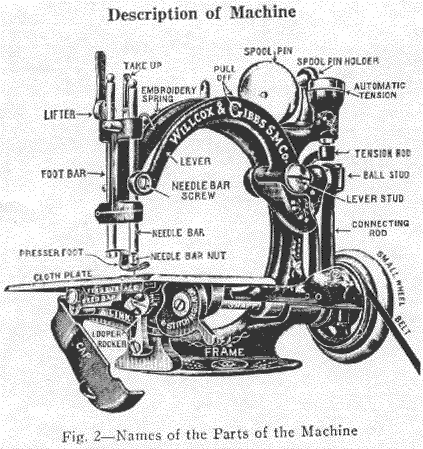

Place machine on motor base, so that the felts on the motor coupling enter the opening in the wheel of the sewing machine; then turn machine-end of motor base towards you, allowing it to project over the edge of the table, and tighten thumb screw underneath. When doing this, be sure that the main shaft of machine is in perfect alignment with main shaft of motor by turning wheel by hand slowly from you. Should it not run freely, loosen thumb screw and adjust machine by slight movement to or from you. Again, turn the wheel and if it runs freely, then tighten thumb screw securely, taking care not to shift machine on base.
Screw plug into electric lamp or base socket; then take plug cap end of flexible cord attached to Foot Controller and snap the two pins into the plug. Do not attempt to screw into or unscrew plug from socket while flexible cord is attached. If you do, you will probably break the wires in the flexible cord.
Take the plug cap end of the shorter flexible cord and snap the two pins into the Foot Controller. Light pressure with the foot gives slow speed, more pressure increased speed. The speed may be changed by adjusting the screw underneath the foot pedal, by turning this screw to the right or left. Turning to the right increases speed; turning to the left decreases speed. How much to raise or lower the adjusting screw will be determined by noting speed of machine when foot-piece touches top of screw.
Before applying current, be sure machine wheel turns freely by hand. If it does not, follow instructions under head "TO ADJUST MOTOR TO MACHINE".
Take hold of the hard rubber Plug and remove gently. This will prevent disturbing the wires and save you much trouble and annoyance.
Arrange lead wires on sewing machine and foot controller carefully. Turn stitch regulator to 22. Place machine in case at a slight angle so that the base of machine will slip under brackets which hold it in place. Place attachment box back of machine and oil slide in front, after machine is in place. Place foot controller in compartment provided for it at end of case.
Keep in a dry place.
To lubricate motor, remove grease cups and fill them with vaseline.
as per directions on pages 10 & 11 of Instruction Book, using Willcox & Gibbs Automatic Oil.
by consulting the scale on the right hand side of Cloth Plate. Use only genuine Willcox & Gibbs Sewing Machine Needles.
always consult Instruction Book, using thread needle and stitch as directed.
Consult the nearest Willcox & Gibbs Office for prompt and courteous service.
The Stand, as shown above, consists essentially of the Table Top; Right Leg; Left Leg; Treadle Rod; Large Wheel, turning upon the Wheel Stud; Pitman, connected at its upper end with crank of Large Wheel by the Crank Stud; and Treadle, connected with the lower end of Pitman by the Treadle Stud.
The Large Wheel is covered in front by a Guard to protect the dress of the operator, and in a recess in this guard is a small Rubber Ball, which acting as a Brake, prevents the Wheel turning the wrong way.

This illustrates the principal parts of the Machine, to which reference is made in the course of these Directions, and a careful study of which will be found exceedingly helpful to the learner.
Before commencing to sew, practice running Machine, with one foot, without thread in the Needle, and with Presser Foot raised from Cloth Plate, until you can with ease produce a regular motion.
The Cap that covers the Looper must be kept closed while practising or sewing.
We advise use of one foot only in running Machine, as it runs so very lightly.
A little care bestowed in properly oiling and cleaning Machine will abundantly repay owner in ease of running and general comfort.
Use oil put up expressly by us, which is decidedly best for the purpose, and can be obtained at any of our Branch Offices. Should Machine run hard after standing for some time (which it may do if any oil except ours is used), oil with a little kerosene or benzene, and after running it a few minutes, oil again with our sewing machine oil. (See "Best Sewing Machine Oil" on page 39)
A bottle of oil and an oiler accompany each Machine sent out by us.
The Machine should be cleaned and oiled two or three times a week, or every day, if in constant use.
Keep outer rim of Large Wheel, underneath Table, free from oil. This will prevent its turning backward in consequence of oil reaching Rubber Ball. Should it do so, wipe outer rim of Large Wheel and Rubber Ball thoroughly with a cloth, then apply powdered chalk or pumice stone to Rubber Ball.
If oil gets on your work, rub the spots with soap and cold water before putting the garment in the suds.
The Stand requires oiling in only three places, at each of which will be found oil holes, namely Wheel Stud, Crank Stud (both to the right of Pitman), and Treadle at its connection with Pitman (See Fig 1)
To oil them move toe of Treadle to its lowest point. This will raise both Stud oil holes to the top -- the only position in which they can be reached for oiling.